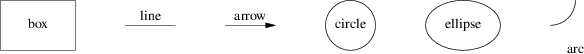
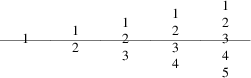
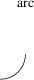
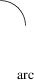

Pictures are described procedurally, as collections of objects connected by motions. Normally, pic tries to string together objects left-to-right in the sequence they are described, joining them at visually natural points. Here is an example illustrating the flow of data in pic processing:
Figure 3-1: Flow of pic data
This was produced from the following pic program:
.PS ellipse "document"; arrow; box width 0.6 "\fIpic\/\fP(1)" arrow; box width 1.1 "\fIgtbl\/\fP(1) or \fIgeqn\/\fP(1)" "(optional)" dashed; arrow; box width 0.6 "\fIgtroff\/\fP(1)"; arrow; ellipse "PostScript" .PE
This little program illustrates several pic basics. Firstly, we see how to invoke three object types; ellipses, arrows, and boxes. We see how to declare text lines to go within an object (and that text can have font changes in it). We see how to change the line style of an object from solid to dashed. And we see that a box can be made wider than its default size to accommodate more text (we’ll discuss this facility in detail in the next section).
We also get to see pic’s simple syntax. Statements are ended by newlines or semicolons. String quotes are required around all text arguments, whether or not they contain spaces. In general, the order of command arguments and modifiers like “width 1.2” or “dashed” doesn’t matter, except that the order of text arguments is significant.
Here are all but one of the basic pic objects at their default sizes:

Figure 3-2: Basic pic objects
The missing simple object type is a spline. There is also a way to collect objects into block composites which allows you to treat the whole group as a single object (resembling a box) for many purposes. We’ll describe both of these later on.
The box, ellipse, circle, and block composite objects are closed; lines, arrows, arcs and splines are open. This distinction is often important in explaining command modifiers.
Figure 3-2 was produced by the following pic program, which introduces some more basic concepts:
.PS box "box"; move; line "line" ""; move; arrow "arrow" ""; move; circle "circle"; move; ellipse "ellipse"; move; arc; down; move; "arc" .PE
The first thing to notice is the move command, which moves a default distance (1/2 inch) in the current movement direction.
Secondly, see how we can also decorate lines and arrows with text. The line and arrow commands each take two arguments here, specifying text to go above and below the object. If you wonder why one argument would not do, contemplate the output of arrow "ow!":
Figure 3-3: Text centered on an arrow
When a command takes one text string, pic tries to place it at the object’s geometric center. As you add more strings, pic treats them as a vertical block to be centered. The program
line "1"; line "1" "2"; line "1" "2" "3"; line "1" "2" "3" "4"; line "1" "2" "3" "4" "5";
for example, gives you this:

Figure 3-4: Effects of multiple text arguments
The last line of Figure 3.2’s program, ‘arc; down; move; "arc"’, describing the captioned arc, introduces several new ideas. Firstly, we see how to change the direction in which objects are joined. Had we written arc; move; "arc", omitting down the caption would have been joined to the top of the arc, like this:

Figure 3-5: Result of arc; move;
This is because drawing an arc changes the default direction to the one its exit end points at. To reinforce this point, consider:

Figure 3-6: Result of arc cw; move;
All we’ve done differently here is specify “cw” for a clockwise arc (“ccw” specifies counter-clockwise direction). Observe how it changes the default direction to down, rather than up.
Another good way to see this via with the following program:
line; arc; arc cw; line
which yields:
Figure 3-7: Result of line; arc; arc cw; line
Notice that we did not have to specify “up” for the second arc to be joined to the end of the first.
Finally, observe that a string, alone, is treated as text to be surrounded by an invisible box of a size either specified by width and height attributes or by the defaults textwid and textht. Both are initially zero (because we don’t know the default font size).